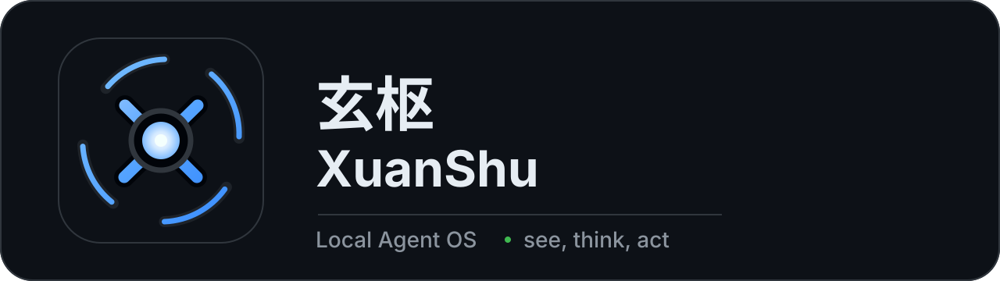
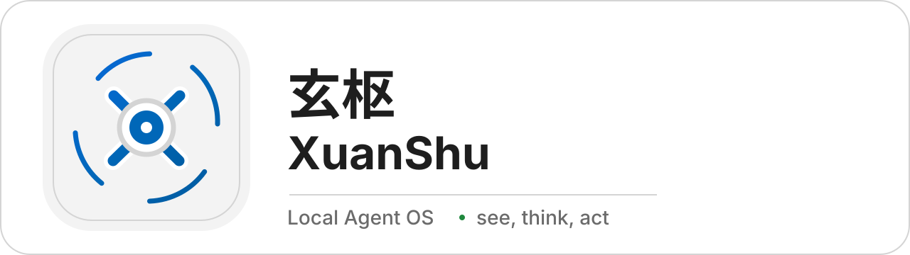
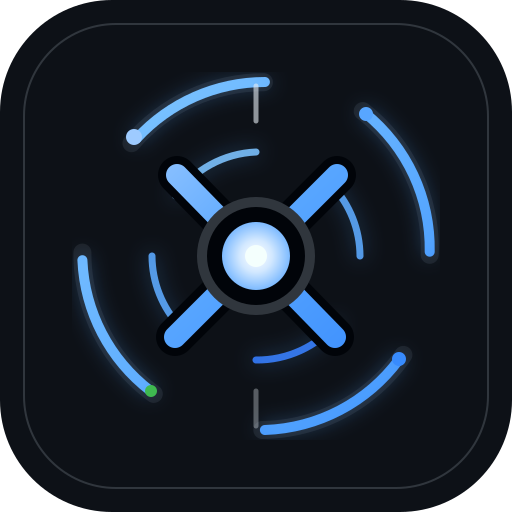
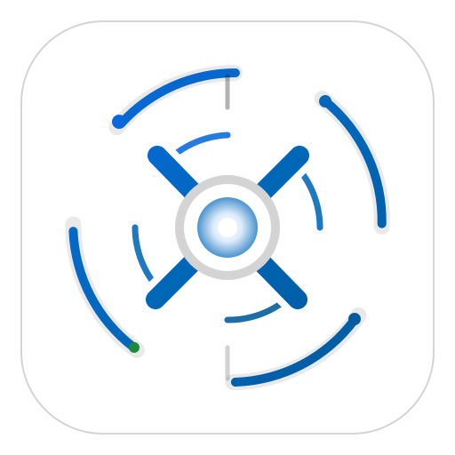
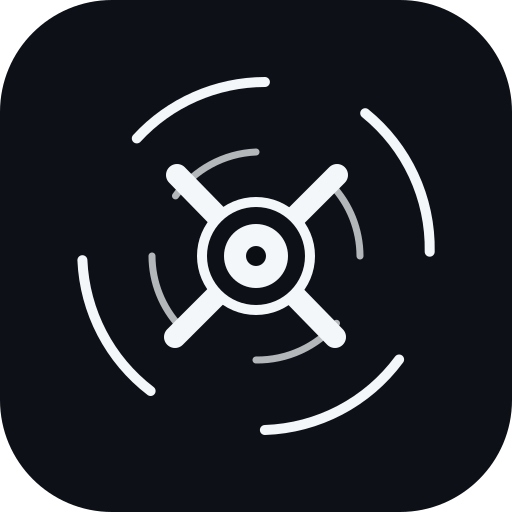

玄枢 XuanShu
Local Agent OS · see, think, act
Logo system preview
Primary dark lockup

Light lockup

Dark app icon

X-shaped central axis
Uses the product dark tokens: app background, default border, primary text, blue accent, and success green.
Light app icon

Light theme match
Uses the product light tokens: white app background, light surface, default border, and Windows-style blue accent.
Mono icon

One-color usage
For masks, tray fallbacks, small UI marks, engraving, and constrained surfaces.
Palette
Dark App
#0D1117
#0D1117
Dark Surface
#161B22
#161B22
Dark Accent
#58A6FF
#58A6FF
Light App
#FFFFFF
#FFFFFF
Light Surface
#F3F3F3
#F3F3F3
Light Accent
#0067B8
#0067B8